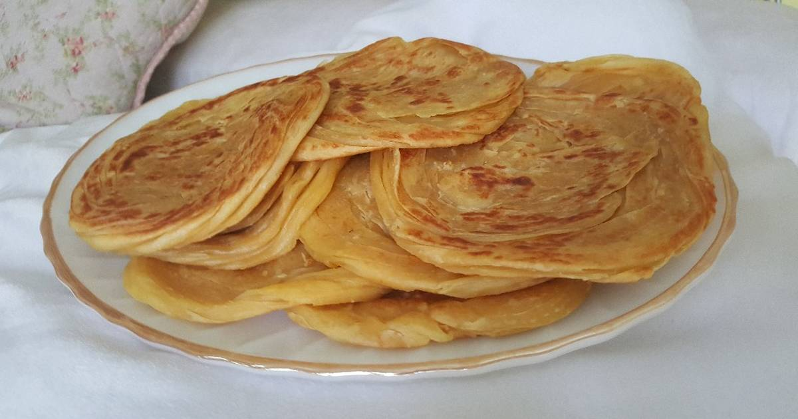

Resep Kue Maryam

Bahan-Bahan
- 250 gr tepung terigu
- 1 butir telur
- 3 sdm margarin, lelehkan
- 100 ml air hangat
- 2 sdm susu bubuk (opsional)
- 1/2 sdt garam
- Margarin leleh untuk olesan
- Minyak untuk merendam
Langkah-Langkah
- Campur semua bahan roti jadi satu

- Uleni adonan sampai kalis

- Bentuk adonan mejadi bola bola

- pipihkan adonan yang tadi dibulatkan dengan cara dikibaskan

- Lembaran adonan dilipat-lipat seperti lipatan kipas tangan,
lalu tarik adonan supaya lebih panjang,
Kemudian digulung seperti konde.

- Susun lagi adonan yang sudah dibentuk konde sesuai dengan urutan pembuatannya.

- Panggan di atas wajan teflon sampil ditekan-tekan sampai pipih dan matang.

- Roti maryam sudah jadi dan siap disantap selagi hangat.